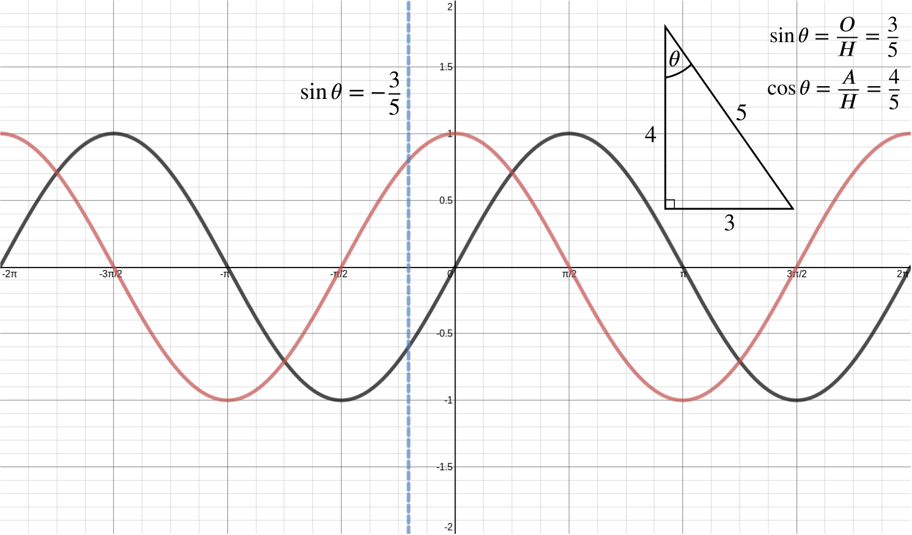

A curve has parametric equations x=5asecθ,y=3atanθ, where −12π<θ<12π and a is a positive constant. Find the coordinates of the point on the curve at which the normal is parallel to the line y=x.
Differentiating with respect to θ, we find that
dxdθdydθ=5asecθtanθ=3asec2θ.
Thus
dydx=3asec2θ5asecθtanθ=35sinθ.
The normal to the curve therefore has gradient
−53sinθ.
The normal is parallel to y=x when
−53sinθ=1⟹sinθ=−35.
By sketching a graph of y=sinθ, we can see that there’s a unique value of θ in the range −π2<θ<π2 for which sinθ=−35.
The blue line in the diagram shows that this corresponds to a positive value of cosθ.
Hence, we get that
cos2θ=1−sin2θ=1−(−35)2=1625⟹cosθ=45
as cosθ is positive.

y=sinθ (red), y=cosθ (black) and the value of θ for which the normal is parallel to y=x (blue)
Alternatively, using the sketch above, we can see that we are dealing with a 3−4−5 triangle, and so the value of cosine we need is cosθ=45.